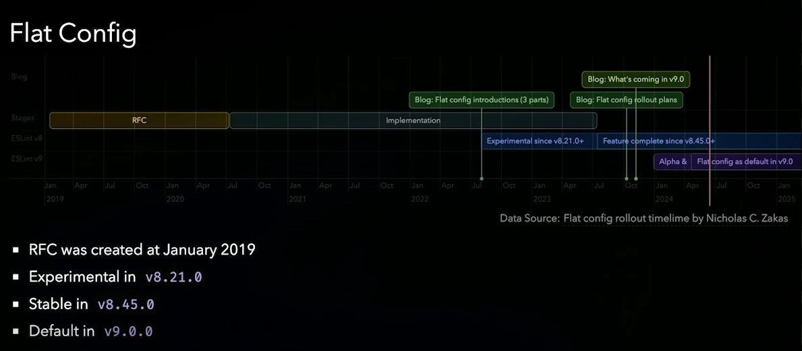

Migrate to ESLint 9.x
Have you updated your ESLint setup to version 9.x? This version includes many breaking changes. Two major changes you need to consider are:
- Node.js < v18.18.0 and v19 are no longer supported.
- Flat config is now the default and has some changes.
Flat config
ESLint's new flat config system makes setting up easier by using just one JavaScript file (named eslint.config.js, eslint.config.mjs, or eslint.config.cjs). This is different from the old way, which used several different files like .eslintrc* and the package.json.
Here is a simple comparison between legacy config and flat config:
| Aspect | Legacy Config | Flat Config |
|---|---|---|
| Sources | .eslintrc .js, .json, .yml, package.json, etc. |
eslint.config.js .cjs, .mjs |
| Configuration style | Convention-based extends |
Explicit native imports |
| Plugin definition | Package-named plugins |
Plugins are objects |
| Inheritance tree | Potentially complex | Composable and traceable |
Benefits of the flat config
- Performance: Reduced overhead due to a single configuration source.
- Maintainability: Easier to manage and update.
- Flexibility: More straightforward to compose and understand.
You can learn more about the reason for the flat config by visiting these links: here and here. For more information on the syntax and concepts, check out the ESLint configuration page.
Now, in ESLint 9.x, the flat config is enabled by default, which means the old eslintrc* configuration files won't work properly.
Here is the flat config rollout timeline:

Image by Antony Fu (https://portal.gitnation.org/contents/eslint-one-for-all-made-easy)If you want to continue to use the legacy way, you can turn off the new system by setting an environment variable called ESLINT_USE_FLAT_CONFIG to false, but you'll see a warning message in your terminal. So the recommended way is to migrate to the flat config file. This might pose some challenges if you aren't familiar with this new system.
Example of migrating ESLint 9.x in a Typescript project
We'll dive directly into an example to better understand how the flat config works. We will migrate a legacy ESLint config from ESLint 8.x to ESLint 9.x.
Preparing for migration
Here are some steps to consider for the migration:
- Verify plugin support: Ensure that all the plugins you use support ESLint 9.x and the flat config. You can track ESLint v9 support and flat config support. Most popular plugins already support these changes.
- Update NodeJS and dependencies
- Separate Prettier and ESLint: (If you use the
plugin:prettierplugin) ESLint has deprecated formatter rules, meaning there is no format syntax with ESLint. This reduces conflicts between ESLint and Prettier. To simplify the ESLint config, I recommend separating ESLint and Prettier, and no longer usingplugin:prettier. This also allows flexibility in choosing other formatter tools like Biome.
Use the migrator tool
The ESLint team has developed a migrator tool to help convert legacy config files (e.g., .eslintrc*) to the flat config.
Here's how to use it:
npx @eslint/migrate-config .eslintrc.yml
Here is a simple example of a legacy config file .eslintrc.yml:
parser: '@typescript-eslint/parser'
parserOptions:
project: ./tsconfig.json
sourceType: module
env:
node: true
jest: true
plugins:
- import
extends:
- eslint:recommended
- plugin:@typescript-eslint/recommended
- plugin:prettier/recommended
- plugin:import/recommended
- plugin:import/typescript
settings:
import/resolver:
typescript: true
node: true
rules:
'@typescript-eslint/no-use-before-define': 'off'
'require-await': 'off'
'no-duplicate-imports': 'error'
'no-unneeded-ternary': 'error'
'prefer-object-spread': 'error'
'@typescript-eslint/no-unused-vars': ['error', { ignoreRestSiblings: true, args: 'none' }]
This simple ESLint config is for a TypeScript NodeJS project with Jest for testing and includes various plugins for different rules. Your project might contain more plugins, more rules, or use different config file types (.eslintrc.{js, cjs, mjs} or .eslintrc), but the process for updating your setup will be similar
Here is the generated config by migrator tool:
import { fixupConfigRules, fixupPluginRules } from '@eslint/compat'
import _import from 'eslint-plugin-import'
import globals from 'globals'
import tsParser from '@typescript-eslint/parser'
import path from 'node:path'
import { fileURLToPath } from 'node:url'
import js from '@eslint/js'
import { FlatCompat } from '@eslint/eslintrc'
const __filename = fileURLToPath(import.meta.url)
const __dirname = path.dirname(__filename)
const compat = new FlatCompat({
baseDirectory: __dirname,
recommendedConfig: js.configs.recommended,
allConfig: js.configs.all,
})
export default [
...fixupConfigRules(
compat.extends(
'eslint:recommended',
'plugin:@typescript-eslint/recommended',
'plugin:prettier/recommended',
'plugin:import/recommended',
'plugin:import/typescript',
),
),
{
plugins: {
import: fixupPluginRules(_import),
},
languageOptions: {
globals: {
...globals.node,
...globals.jest,
},
parser: tsParser,
ecmaVersion: 5,
sourceType: 'module',
parserOptions: {
project: './tsconfig.json',
},
},
settings: {
'import/resolver': {
typescript: true,
node: true,
},
},
rules: {
'@typescript-eslint/no-use-before-define': 'off',
'require-await': 'off',
'no-duplicate-imports': 'error',
'no-unneeded-ternary': 'error',
'prefer-object-spread': 'error',
'@typescript-eslint/no-unused-vars': [
'error',
{
ignoreRestSiblings: true,
args: 'none',
},
],
},
},
]
The migrator will prompt you to install additional packages:
Wrote new config to ./eslint.config.mjs
You will need to install the following packages to use the new config:
- @eslint/compat
- globals
- @eslint/js
- @eslint/eslintrc
- @eslint/js: ESLint team start to make a core rewrite the ESLint, all the rules, documentations will move to the new package. This is a ESLint Javascript package rules. We will also have
@eslint/jsonfor json linter,@eslint/markdownfor markdown linter. - @eslint/eslintrc: This package contains the legacy
eslintrcconfiguration file format for ESLint. You will not need it if you start to write a new flat config files - @eslint/compat: This package allow you to wrap existing previous ESLint rules, plugins and configurations.
After using the migrator, we can identify additional dependencies we need to install: @eslint/js and globals.
We no longer need the package @eslint/eslintrc since we are now using the flat config file. Additionally, @eslint/compat is not necessary unless certain plugins in your project do not support the flat config.
This tool might not produce a perfect result, but it provides a good starting point. That help us understand better how the syntax of the flat config look like. But in all cases, it will not work directly, we need to require a lot of manual adjustments. We will see the next part to know how better writting the flat config.
Writing the new config
Considering our project contains different file extensions such as js, mjs, ts, the new config should be written like this:
import importPlugin from 'eslint-plugin-import'
import globals from 'globals'
import tsParser from '@typescript-eslint/parser'
import eslintJs from '@eslint/js'
import eslintTs from 'typescript-eslint'
const tsFiles = ['{app,tests}/**/*.ts']
const languageOptions = {
globals: {
...globals.node,
...globals.jest,
},
ecmaVersion: 2023,
sourceType: 'module',
}
const customTypescriptConfig = {
files: tsFiles,
plugins: {
import: importPlugin,
'import/parsers': tsParser,
},
languageOptions: {
...languageOptions,
parser: tsParser,
parserOptions: {
project: './tsconfig.json',
},
},
settings: {
'import/parsers': {
'@typescript-eslint/parser': ['.ts'],
},
},
rules: {
'import/export': 'error',
'import/no-duplicates': 'warn',
...importPlugin.configs.typescript.rules,
'@typescript-eslint/no-use-before-define': 'off',
'require-await': 'off',
'no-duplicate-imports': 'error',
'no-unneeded-ternary': 'error',
'prefer-object-spread': 'error',
'@typescript-eslint/no-unused-vars': [
'error',
{
ignoreRestSiblings: true,
args: 'none',
},
],
},
}
// Add the files for applying the recommended TypeScript configs
// only for the Typescript files.
// This is necessary when we have the multiple extensions files
// (e.g. .ts, .tsx, .js, .cjs, .mjs, etc.).
const recommendedTypeScriptConfigs = [
...eslintTs.configs.recommended.map((config) => ({
...config,
files: tsFiles,
})),
...eslintTs.configs.stylistic.map((config) => ({
...config,
files: tsFiles,
})),
]
export default [
{ ignores: ['docs/*', 'build/*', 'lib/*', 'dist/*'] }, // global ignores
eslintJs.configs.recommended,
...recommendedTypeScriptConfigs,
customTypescriptConfig,
]
You might notice that we don’t need to use tools like @eslint/compat or @eslint/eslintrc, which keeps the config cleaner and easier to maintain.
If some plugins in your project do not yet support the flat config, you will need to use @eslint/compat. For example, the package eslint-plugin-import does not fully support the flat config yet, so some rules might not work correctly. In my case, I use importPlugin.configs.typescript.rules which works without using @eslint/compat.
For specific rules and file extensions, such as common.js files, we provide separate configurations to ensure they are correctly linted according to their specific requirements:
const customCommonJSConfig = {
files: ['{app,tests}/**/*.cjs'],
languageOptions: {
...languageOptions,
sourceType: 'commonjs',
},
rules: customCommonJSRules,
}
const customESMConfig = {
files: ['{app,tests}/**/*.{.js,mjs}'],
languageOptions,
rules: customESMRules,
}
// And add it to the export config
export default [
{ ignores: ['docs/*', 'build/*', 'lib/*', 'dist/*'] }, // global ignores,
eslintJs.configs.recommended,
customESMConfig,
customCommonJSConfig,
...recommendedTypeScriptConfigs,
customTypescriptConfig,
]
By using the files field, you can ensure that the defined rules apply only to the specified files, providing more granular control over your linting process. This is especially useful in projects with multiple file types, such as JavaScript, TypeScript, and CommonJS files, etc..., where each type may require different linting rules.
That's all!
Bonus: ESLint Inspector
Once you have finished writing your ESLint config file, you can use the tool eslint-config-inspector. It's a visual tool for inspecting and understanding your ESLint flat configs. Give it a try to better understand your config.
UPDATED: March 11, 2025
ESLint recently has made significant improvements for the way to define the configuration files.
You can now use defineConfig from eslint/config to extend your configuration.
This brings back the extends functionality, adds support for global ignores, and maintains compatibility with older plugins…etc. (and a lot of good new features for us)
These changes make migrating to ESLint 9.x much easier than before. Many thanks to the ESLint team for their development efforts!
For more details, check the official ESLint blog post: Evolving flat config with extends
Thanks for reading! This writing style focuses on clarity and simplicity, explaining concepts in accessible terms rather than pursuing strict academic precision. If you notice anything outdated, feel free to comment or send me a message.